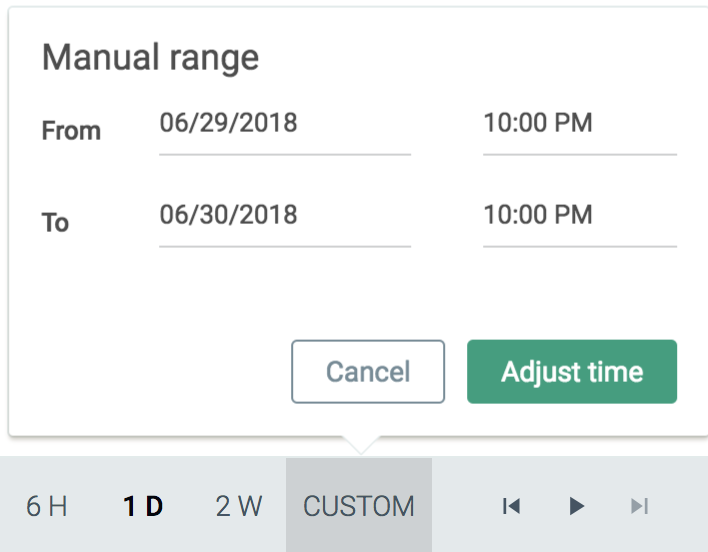

Time Windows
By default, Sysdig Monitor displays information in Live mode. This means that dashboards, panels, and the Explore table will be automatically updated with new data as time passes, and will display the most recent data available for the configured time window.
Note
By default, time navigation will enter Live mode with a two hour time window.
The time window navigation bar provides users with quick links to common time windows, as well as the ability to configure a custom time period in order to review historical data.
As shown in the image above, the navigation bar provides a number of pieces of information:
The state of the data (Live or Past).
The current time window.
The configured timezone.
In addition, the navigation bar provides:
Quick links for common time windows (one second, one minute, ten minutes, one hour, six hours, one day, and two weeks).
A custom time window configuration option.
A pause/play button to exit Live mode and freeze the data to a time window, and to return to Live mode.
Step back/forward buttons to jump through a frozen time window to review historical data.
Zoom in/out buttons to increase/decrease the time window.
Configure a Custom Time Period
The Time Navigation dropdown panel can be used to configure a specific time range. To configure a manual range:
On the
Exploretab or theDashboardstab, click the Custom link in the time navigation bar.Configure the start and end points, and click the
Adjust Timebutton to save the changes.
Note
Some limitations apply to custom time windows. Refer to the Time Window Limitations section for more information.
Time Window Limitations
Some time window configurations may not be available in certain situations. In these instances, a modification to the time window is automatically applied, and a warning notification will be displayed:
There are two main reasons for a time window being unavailable. Both relate to data granularity and specificity:
The time window specifies a granularity of data that has expired and is no longer available. For example, a time window specifying a one hour time range from six months ago would not be available, resulting in the time window being modified to a time range of at least one day.
The time window specifies a granularity of data that is too high given the size of the window, as a graph can only handle a certain number of datapoints. For example, a multi-hour time range would contain too many datapoints at one minute granularity, and would automatically be modified to 10 minute granularity.